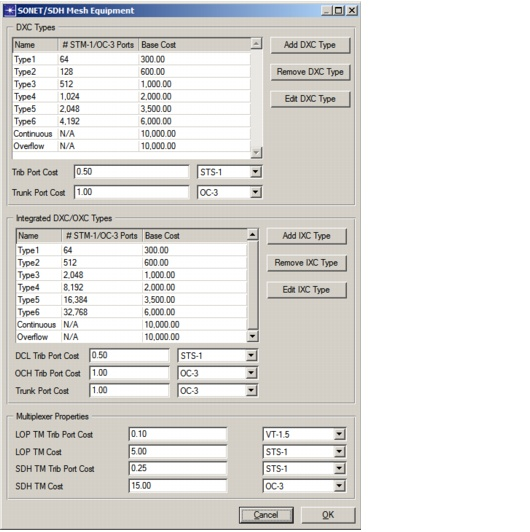
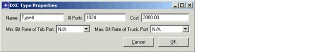

Creating a Baseline Scenario > Equipment Properties > SONET/SDH Mesh Equipment Properties
SONET/SDH Mesh Equipment Properties
You can set parameters for DXC types, for IXC types, and for SONET/SDH multiplexers in the SONET/SDH Mesh Equipment Properties dialog box (Network > Equipment Properties > SONET/SDH Mesh Equipment).
Figure 3-24 SONET/SDH Mesh Equipment Dialog Box

You can add as many DXC or IXC types as you want. By default, two types are always present:
- Continuous type (when you are using discrete node types, as described in The Node Model)
- Overflow type (when you are using discrete node types and the largest specified XC type is not large enough)
You can also define custom DXC and IXC types in addition to the default continuous and overflow types. To create a new type, click Add DXC/IXC Type. To edit the type properties, click Edit DXC/IXC Type. The number of ports you specify is the number of equivalent STM-1/OC-3 ports. This defines the throughput of the node. The DXC/IXC cost defines the base cost of the switch matrix only. Port costs are specified independently of the DXC/IXC type.
Figure 3-25 DXC Type Properties Dialog Box

The DXC is used for switching traffic at the SDH/SONET level. It terminates wavelengths or direct SDH/SONET trunks (in the case of two-tier networks) at its trunk ports, and SDH/SONET traffic at its tributary ports. The size of the switch is specified in equivalent STM-1/OC-3 ports. A 1024 STM-1/OC-3 port switch can terminate:
The IXC is similar to the DXC, except that it switches traffic at both the SONET/SDH and the wavelength levels. This means the IXC also takes optical traffic at its tributary ports. Typically IXCs have a larger throughput than DXCs.
You can specify a minimum bit rate for the tributary ports and a maximum bit rate for the trunk ports of both the DXC and the IXC. To limit the total number of ports on a DXC/IXC, you can specify a minimum bit rate for the tributary ports (in other words, to allow OC-48 and higher bit rate ports only). Any traffic with a lower bit rate is attached to a terminal multiplexer (also called an aggregator) and is not fed directly in the DXC/IXC. This multiplexer aggregates traffic up to the minimum bit rate for the tributary ports. Similarly, you can limit the trunk bit rates of the DXC/IXC ports. The maximum bit rate of trunk ports could be OC-48, for example, while wavelengths in the network use a OC-192 rate. Such a configuration requires a so-called mid-stage multiplexer to multiplex OC-48 ports coming out of the DXC/IXC to OC-192 channels carried on a single wavelength.
Besides a base cost for the switch matrix, the DXC and IXC switches also have a bit rate-dependent cost for their tributary and trunk ports. For the IXC, a further distinction is made between electrical tributary ports (for SONET/SDH traffic) and optical tributary ports (for wavelength services).
Finally, you need to specify the cost of the SONET/SDH terminal multiplexers (TMs) and the cost of their tributary ports. The LOP TM multiplexes LOP traffic into a DCL bit rate. The cost of the LOP TM depends on the DCL bit rate it multiplexes towards. Each tributary port on the LOP TM has a cost depending on the bit rate of the LOP traffic it multiplexes. The SDH TM multiplexes DCL traffic into an OCH bit rate. The cost of the SDH TM depends on the OCH bit rate it multiplexes towards. Each tributary port on the SDH TM has a cost depending on the bit rate of the DCL traffic it multiplexes.
| Home © 1987-2007 OPNET Technologies, Inc. All Rights Reserved. This software may be covered by one or more U.S. Patents. See complete patent notice in the Legal Notices section. OPNET Support Center |